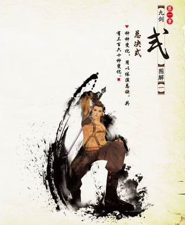
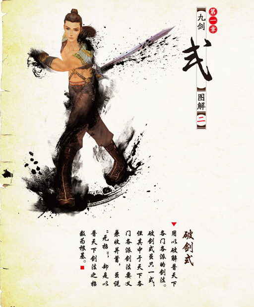
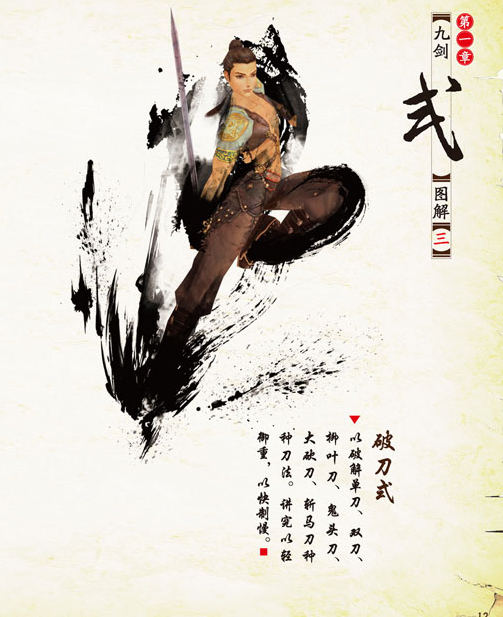
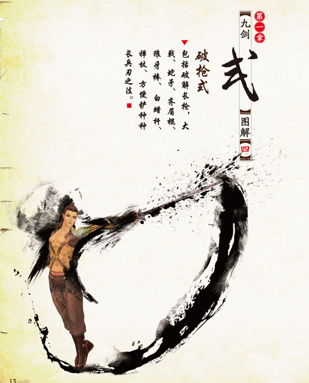
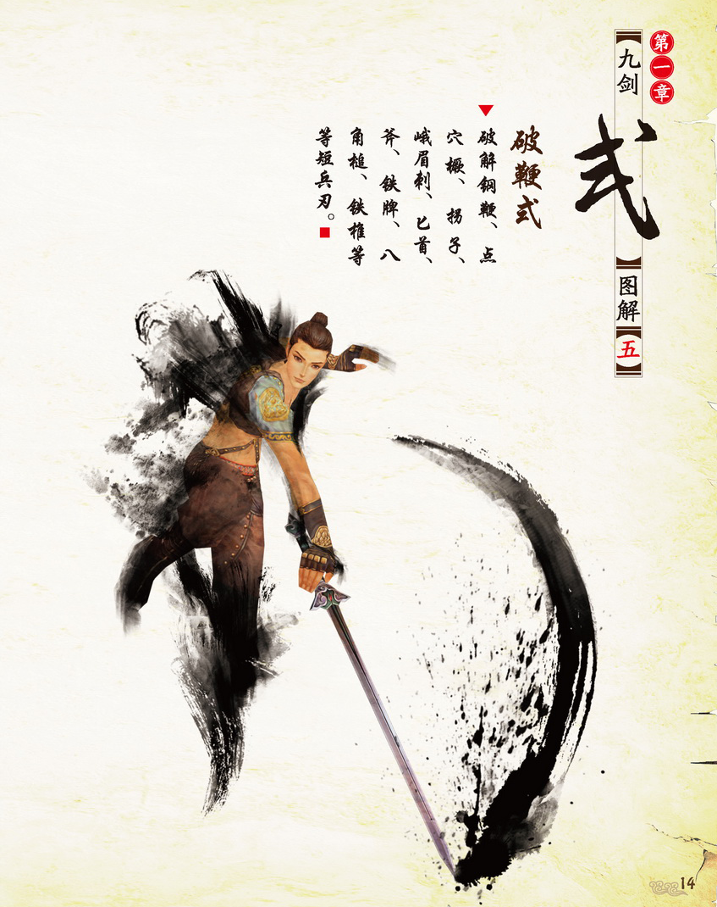
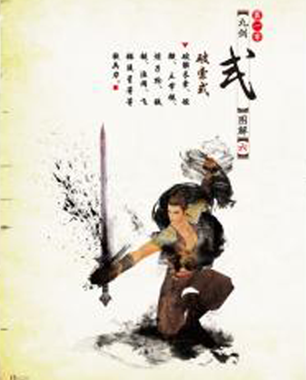
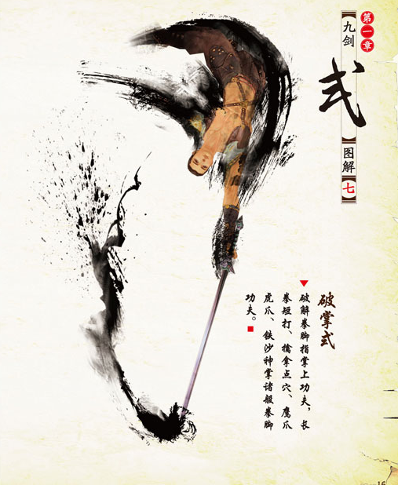
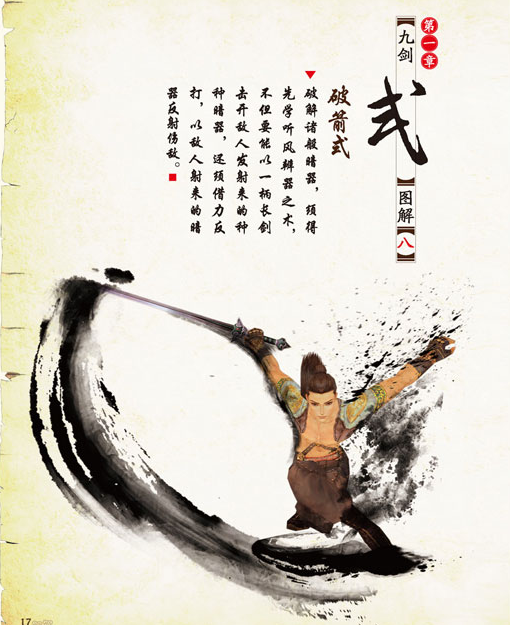
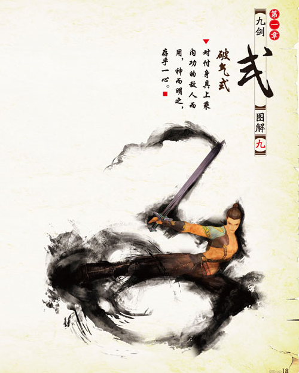

-

总决式
种种变化，用以体演总诀。共有三百六十种变化。
-

破剑式
用以破解普天下各门各派的剑法。「破剑式」虽只一式，但其中于天下各门各派剑法要义兼收并蓄；虽说「无招」却是以普天下剑法之招数为根基，因而其变化之多端不逊于「总决式」。
-

破刀式
以破解单刀、双刀、柳叶刀、鬼头刀、大砍刀、斩马刀种种刀法。讲究以轻御重，以快制慢。
-

破枪式
包括破解长枪，大戟、蛇矛、齐眉棍、狼牙棒、白蜡杆、禅杖、方便铲种种长兵刃之法。
-

破鞭式
破解解钢鞭、点穴橛、拐子、峨眉刺、匕首、斧、铁牌、八角槌、铁椎等等短兵刃。
-

破索式
破解长索、短鞭、三节棍、鍊子枪、铁链、渔网、飞锤、流星等等软兵刃。
-

破掌式
破解拳脚指掌上功夫，长拳短打、擒拿点穴、鹰爪虎爪、铁沙掌诸般拳脚功夫。
-

破箭式
破解诸般暗器，须得先学「听风辨器」之术，不但要能以一柄长剑击开敌人发射来的种种暗器，还须借力反打，以敌人射来的暗器反射伤敌。
-

破气式
对付身具上乘内功的敌人而用。